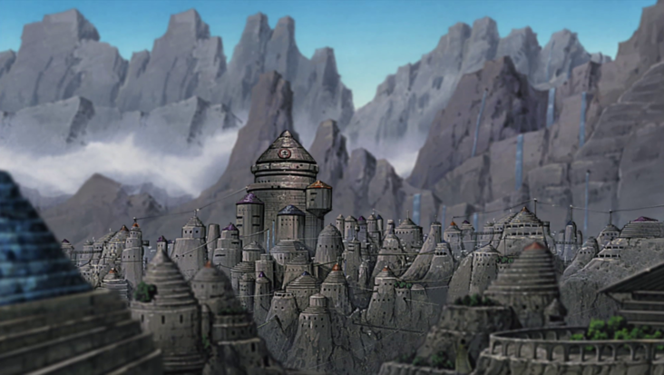
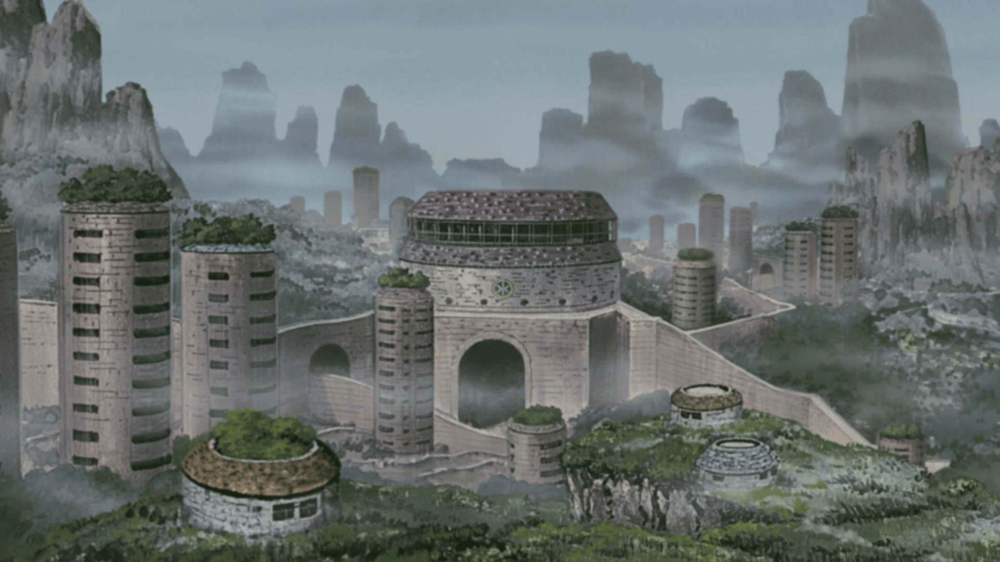
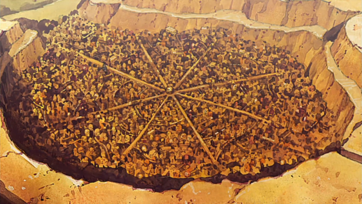
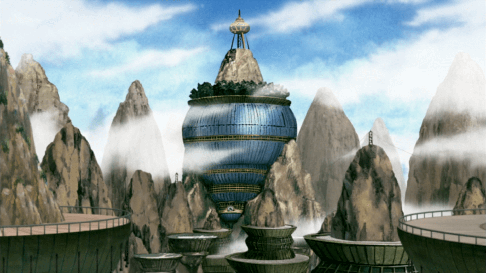
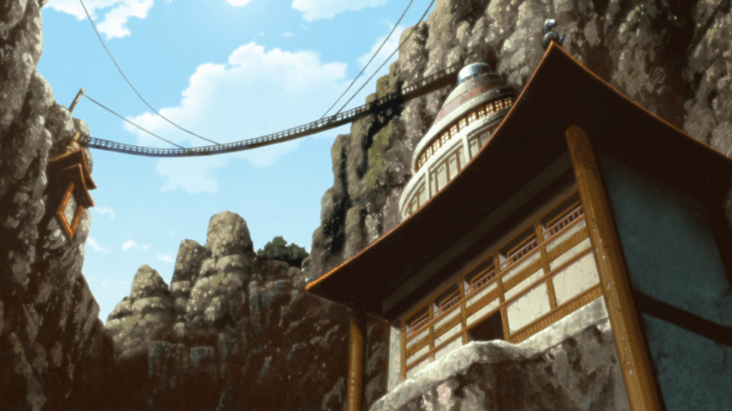
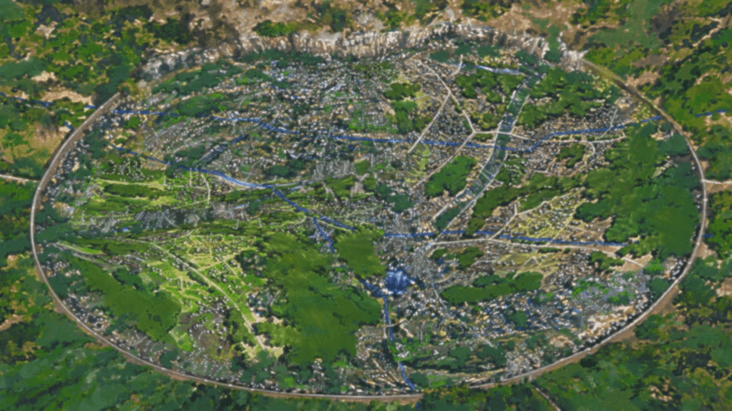

Races & Homelands
Saiyans, Ninjas, Wizards, Shinigami & Quirk-Humans
Races
Saiyans
A Saiyan has immense power which naturally boosts their basic attacks(basic attack is 3). They are a race that originate from Planet Vegeta. Their source of energy is known as their Ki. They have a natural instinct for battle and their strength makes them a force to be reckoned with. The initial heath & cp of a Saiyan are 15 & 10 respectively, this can be increased by ranking up. The max number of slots a Saiyan card can hold is 15. A saiyan has his/her own special move known as a Kekkei Genkai(KKG), they are as follows:
KKG-Saiyan Blood: This can only be activated when a saiyans health is 7 or below, when activated, all damages done to opponent is increased by 1, you can only use an attacking skill after this. You still pay the cp for the attack. 2cp to use.
KKG-Beserk Blood: When this is activated, its user is immune to every skill(including weapons, but not other KKGs or modes) which last for more than one turn. This effect lasts for 5 of opponent's end turns. 4cp to activate.
KKG-Saiyan God: Gain 2cp for three of your end turns.
KKG-Saiyan Pride: When your life reaches zero, gain 5hp, this skill auto-activates and can only occur when you are dead, you play next. 3cp to use
KKG-Judgement: When you die, your opponent takes damage according to the last attack which killed you. 4cp to use.
KKG-Last Chance: When Your health is 5 and below, this allows you to bring back and use one of your used moves and its damage is multiplied by 1.5. If your opponent does not die by this, you lose. 2cp to use
KKG-Absorbtion: When this is used, the damage you receive from an opponent in the last turn is added as health for you. 4cp to use.
KKG-Master: This allows you to use any other KKG in the field.
Ninjas
Ninjas are humans who are blessed with an energy source known as Chakra, they are able to control and harness this power to use different abilities. Ninjas are more strategic in battle, they have a basic attack of 2. They have and initial health and cp of 10 & 15 respectively, these can be increased by ranking up. The max number of slots a ninja card can hold is 17. A ninja has his/her own special move known as a Kekkei Genkai(KKG), they are as follows:
KKG-Jashin: This is a move which allows its user to play, at most two, used(cannot duplicate) moves in one particular turn which will be counted as one single move. 2cp to use.
KKG-Scarecrow: This brings all used moves back except for this one. Opponent plays after this move is used, 3cp to use.
KKG-Senju Blood Element: This Enables its user to use one move of any other character in the field except summoning moves. The move must be used immediately. 2cp to use, you still use cp for the other move used.
KKG-Copy: User can use one of any opponent move, you can decide to use the move immediately or keep it for later(even if it has been used by opponent, it does not matter, as long as it is a move on the opponent's card. Summoning moves can be copied, but those must be used immediately) rules of the jutsu apply. If you try to copy a move opponent does not have, this skill is negated and opponent plays, 3cp to use
KKG-Byakugan: Blocks opponent last and next move ( i.e: Opponents last move would be blocked, then opponents plays another move which would also be blocked). Byakugan remains active till opponents next move is blocked(opponent can skip). 3cp to use.
KKG-Sharingan: You tell your opponent the next move he/she uses and he/she must do it accordingly. This skill makes opponent use skills against himself/herself only if you know the skill off heart. 3cp to use.
KKG-Snatch: This enables user to steal an opponents KKG until the health of the player whose KKG has been stolen is below 7. You can use this even if you are dead. KKG stolen can be used now or saved for later. 2cp to use.
KKG-Jougan: When your health is below 5, and you are about to take damage, pay half your health and opponent will take the damage instead of you, you play next. 3cp to use.
KKG-Rinnengan: Gain 2 used skills back and all your attacks do +1 damage, cannot be used until your health is 8 and below. 4cp to activate.
Wizards
Wizards are a collection of many different races into 1 race. Their source of energy is their Magic, which they use with great effect in battle and to control different elements.A wizard is extremely strong and some also have some guile. A wizard's punch is 2 and kick is 3. They have an initial health & cp of 13 & 12 respectively. The max number of slots a wizard card can hold is 16. A wizard has his/her own special move known as a Kekkei Genkai(KKG), they are as follows:
KKG-Fake Skill: This allows user to use a skill used before but you pay hp instead of cp for the additional skill.
KKG-Tribute: When you die your opponent loses life equal to the amount of cp you have left after removing the cp cost of this move. 3cp to use.
KKG-Dark Grounds: When your cp is lower than 4 gain 5cp, the floor of the field turns to a black hole which decreases all damage done to you by 1. This ends after 5 of your turns. 3cp to use.
KKG-Physical Attack Immunity: All damage that involve puch, kick and weapons are cancelled, no matter what, lasts for 5 of opponent's end turns, after use, opponent plays next. 3cp to use.
KKG-High Magic Nulification: All atk skills involving cp 4 and above are nullified, can be used once. After use, opponent plays next. 3cp to use.
KKG-Magic Block: Opponent cannot play any skill which affects you in their next 2 turns. 3cp to use.
KKG-Exchange: This allows you to take one of an opponent's move,(including modes) but not another KKG and replace it with one of your own(rules of the moves apply), this only works if you know the name of the skill you want to take from your opponent(moves must not be of the same type). 2cp to use.
KKG-Magic Conversion: All damage you recieved in your last turn from one opponent is added as cp for you, can also be used in opponent's turn.
Quirk-Humans
A quirk human is a mutated, advanced and high powered version of a human with different abilites. They have high energy levels which they use to battle. Some Quirk-Humans are more gung-ho when it comes to battle, while some others take a more strategic or subtle approach. They have a basic attack of 3. They have and initial health and cp of 14 & 12 respectively, these can be increased by ranking up. The max number of slots a quirk-human card can hold is 14. Quirk-Humans have specials known as Kekkei Genkai (KKG) and are as follows:
KKG-Quick Harden: Instantly hardens user's body reducing damage recieved by 1, lasts for 6 turns after activation(not user turns), can be used in opponent's turn. 3cp to use.
KKG-Sticky Balls: Opponent cannot damage you without using cp for 3 turns, an attack skill can be used after this. 2cp to use.
KKG-Ice Glacier: User turns battlefield to ice, User's attacks are increased by one and damage recieved reduced by 1 because the intense cold weakens the opponent, lasts for 3 of user's end turns. 3cp to use.
KKG-Dupli Arm: User is able to reuse used moves, lasts for 3 of opponent's end turns. 3cp to use.
KKG-Electrification: User is covered completely with electricity, this increases damage by 1 and user is unaffected by physical attacks, this lasts for 5 turrns. 4cp to use.
KKG-Create: User can use 2 weapon skills belonging to anyone else in the battlefield, the skill is used immediately after activation of this KKG. 2cp to use, 3cp for 2nd use.
KKG-Foresight: Opponent must tell user next 3 skills to be used and must use them accordignly. 3cp to use.
KKG-Heal: Every end turn of the user, add 1hp to user's health, lasts for 5 of the users end turns. 4cp to use.
Homelands

Iwagakure(The Hidden Stone)
TSUCHIKAGE POWER: This kage gets an additional 3cp and kick at every match.
Leader(Tsuchikage):

Kirigakure(The Hidden Mist)
MIZUKAGE POWER: This kage gets an additional 4hp and a boost move at every match
Leader(Mizukage):

Sunagakure(The Hidden Sands)
KAZEKAGE POWER: This kage gets an additional 2cp and 2hp at every match
Leader(Kazekage):

Kumogakure(The Hidden Clouds)
RAIKAGE POWER: This kage gets an additional skill and punch at every match
Leader(Raikage):

Otogakure(The Hidden Sounds)
OTOKAGE POWER: This kage gets an additional 2hp and 4cp at every match
Leader(Otokage):

Konohagakure(The Hidden Leaf)
HOKAGE POWER: This kage gets an additional 3hp and 1cp at every match
Leader(Hokage):

Planet Vegeta
KING'S POWER: This saiyan gets 3hp and 3cp at every match
King: